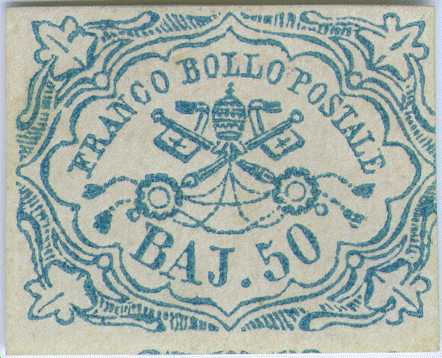
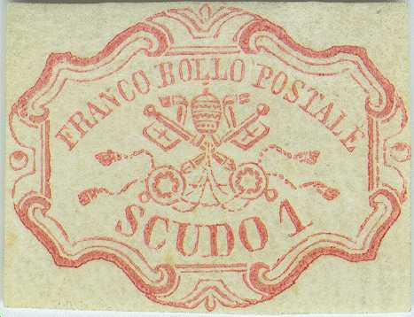
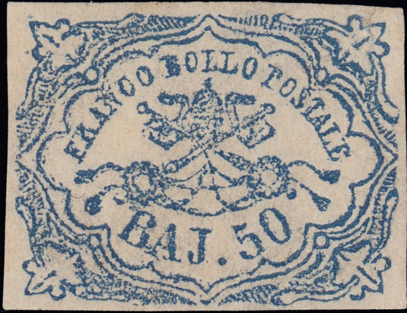

{kind=link}

{kind=link}



Stato Pontificio, Kirchenstaat, Etats pontificaux
Return To Catalogue - Forgeries of the 50 b value - Forgeries of the 1 Sc value - Other values of the 1851 issue - 1867 issue - Italy
Note: on my website many of the
pictures can not be seen! They are of course present in the
catalogue;
contact me if you want to purchase the catalogue.
For other values of the 1851 issue ,click here.
50 b blue 1 Scudo red
These stamps were printed in sheets of 50 (10 x 5). The 1 Scudo stamp was only used in Rome.
Value of the stamps |
|||
vc = very common c = common * = not so common ** = uncommon |
*** = very uncommon R = rare RR = very rare RRR = extremely rare |
||
| Value | Unused | Used | Remarks |
| 50 b | RRR | RRR | |
| 1 S | RRR | RRR | |
Specialists distinghuish two printings of the 50 b; the first printing is quite clear, the second printing is more defective. Examples of the second printing:

Second printing

A block of 12 certified genuine 1 Scudo stamps.
Many forgeries exist of the 50 b and 1 S stamps. In the early 20 th century Album Weeds already distinghuishes 6 forgeries of the 50 b and 5 forgeries of the 1 B. Examples of forgeries:
Click here for Papal States, 1867 issue and Vatican issues.
Stamps - Francobolli - Timbres-Poste - Briefmarken
{kind=link}